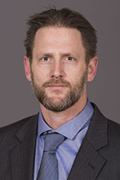

Master of Arts
Teaching English to Speakers of Other
Languages (TESOL)
The MA in TESOL is a professional degree that uniquely qualifies degree holders to teach English in higher education to adult speakers of other languages. Accredited intensive English programs, community colleges, and some English writing programs on college and university campuses across the U.S. and around the world require instructors to have the MA in TESOL. The degree provides teachers with knowledge and skills in applied linguistics, second language acquisition, and practical supervised teaching experience in the form of a high quality supervised teaching practicum in an intensive English program on campus that uniquely equip them to analyze and meet the English language learning needs of undergraduate and graduate students across the disciplines.
Priority deadline: December 1, 2016; accepting applications through April 30, 2017
Admissions decisions beginning: January, 2017
Questions? Contact Professor Kendall King
Curriculum
Sample Program of Study
Year One (Fall): Foundations in second languages & cultures; Methods of teaching ESL in higher education; English grammar for ESL teachers
Year One (Spring): Advanced grammar for ESL teachers; Practicum in teaching ESL
Year Two (Fall): Analyzing learner language in SLA; Foreign Language Testing and Assessment or Assessing English Learners; and electives such as: Teaching Literacy in Second Language Classrooms
Year Two (Spring): Complete thesis and elective such as: Language, Culture, and Education
Requirements for the MA in TESOL
To earn the MA in TESOL, students must take 31-34 credits of required coursework, pass a Language Proficiency Exam, and write and defend a final thesis (Plan A) or a qualifying paper (Plan B). See below for details.
See the required core courses on the graduate catalogue. Scroll to the bottom of the page under "TESOL."
Thesis
Plan A
- 10 thesis credits
- approximately 450 hours of work
- involves original research in the form of a "mini-dissertation" divided into chapters
- is likely to require human subjects (IRB) approval
- final copy is bound and submitted to the Graduate School
- often pursued by studens who inted to pursue a Ph.D.*
- Students must also complete a minor or related field selected in consultation with a faculty advisor (6 cr.)
*Completing a thesis does not guarantee admission to a Ph.D program, though, if accepted, the thesis can serve as the basis of your dissertation.
25 required credits + 10 thesis credits + 6 elective/minor credits=41 total credits
See the courses in the graduate catalogue under TESOL.
Final Paper
Plan B
- 3 credit "Problems" course
- approximately 120 hours of work
- results in 1 paper, 40-60 pages in length, divided into sections. Or 2 papers, each 20-30 pages
- may or many not involve human subjects (IRB) approval
- final copy is not submitted to the graduate school
- often pursued by students who aren't committed to pursuing a Ph.D.
- Students must also complete a minor or related field selected in consultation with a faculty advisor (9 cred.)
25 required credits + 9 elective/minor credits=34 total credits
See the courses in the graduate catalogue under TESOL
Opportunities
Funding
Support is available in the form of:
- Financial support through Teaching Assistantships in MELP, the Writing Center, or the undergraduate TESL program.
- Fellowships as FLAS
While support is not guaranteed, we make every attempt to financially support full-time students through completion. You may also explore assistantships available outside our department on the University's employment page.
Strong applicants demonstrate:
Admission criteria
- Evidence of interest in teaching English and second languages
- Evidence of experience in the discipline
- Strong writing skills
- Bachelor's degree from an accredited U.S. institution or foreign equivalent; 3.00 GPA preferred
If you are a returning Graduate School student, follow the Readmission guidelines.
If you are a current Graduate School student and need to change your program, follow the Change of Status guidelines.
Faculty

Professor
Martha Bigelow
Second language acquisition | Schooling experiences of adolescent immigrant youth | Preservice teacher education | Multicultural education. Full profile

Associate Professor
Mary (Fong) Hermes
Indigenous language revitalization | Multimedia technology and language learning. Full profile

Professor
Kendall King
Second language learning | Bilingualism | Transmigratory experiences of children | Immigrant education | Language ideology | Language policy. Full profile

Senior Lecturer
Susan Ranney
Preservice teacher education | Language through content | Academic language instruction | Functional grammar. Full profile

Professor
Elaine Tarone
Second language acquisition | Applied linguistics | Interlanguage | Alphabetic literacy and second-language oracy. Full profile

Professor
Diane (Dee) Tedick
Dual language + immersion education | Content-based language instruction | Language teacher education and development | World language education. Full profile

Assistant Professor
Blanca Caldas
Bilingual education | Minoritized language practices and pedagogies | critical pedagogy |Spanish for bilingual teachers | Participatory action research. Full profile

Teaching Specialist
Sam David
Bilingual literacy | culturally responsive pedagogy |educational equity for linguistically diverse students. Full profile
Prepare to apply
All applicants
To apply you will need:
Unofficial transcripts. Upload your transcripts into the application system; please do not mail your transcripts. Official transcripts are required only after you are admitted. Tips for uploading your transcript(s). Transfer credits must be evaluated and approved by a faculty adviser.
GRE scores. Only the general test is required. University of Minnesota code: 6874. Average GRE scores of admitted students.
Resume. Upload in the Program Supplementary Information - Graduate Program Additional Application section.
Personal statement. Upload in the Program Supplementary Information section. Please trace how you became interested in research in this discipline, as well as what problems interest you the most and why. Be sure to speak to:
- why you want to study in our department
- what strengths, expertise, and research experience would contribute to your success in our program
- your professional goals for pursuing a research-focused degree
Diversity statement. Identify the distinctive qualities, characteristics, and life experiences you would contribute to your graduate program and to the education of fellow students at the University of Minnesota. You may wish to include examples that address your contribution to the diversity of the student body and illustrate your motivation to succeed by setting high standards for accomplishing intellectual and other goals, overcoming obstacles to achievement, and/or helping others to gain access to the resources necessary for success. (please do not exceed one page in length)
3 letters of recommendation. Upload in the Department\Program Forms section.
Short writing sample (optional). For example, an excerpt from a term paper or research paper for publication.
Prepare to apply
International applicants
International applicants may also need:
- An English translation of your transcripts, if the transcript is not in English. A course by course evaluation may be required.
- TOEFL/IELTS or MELAB. You may qualify for an exception if you have completed 16 semester or 24 quarter credits within the past 24 months in residence as a full-time student at an accredited institution of higher learning in the United States.
Credit for past work
Transfer credits
You must complete at least 60% of your coursework (not including thesis credits) within our program. Thesis credits cannot be transferred.
You can transfer a maximum of 12 graduate course credits taken as non-degree seeking or non-admitted status at the University of Minnesota.
After you are admitted, you will work with your adviser to determine which credits may transfer.
Earn your Master of Arts:
Graduate Studies Coordinator
Kristina Pearon
cigs@umn.edu
fax: (612) 624.8277
office: 125H Peik Hall